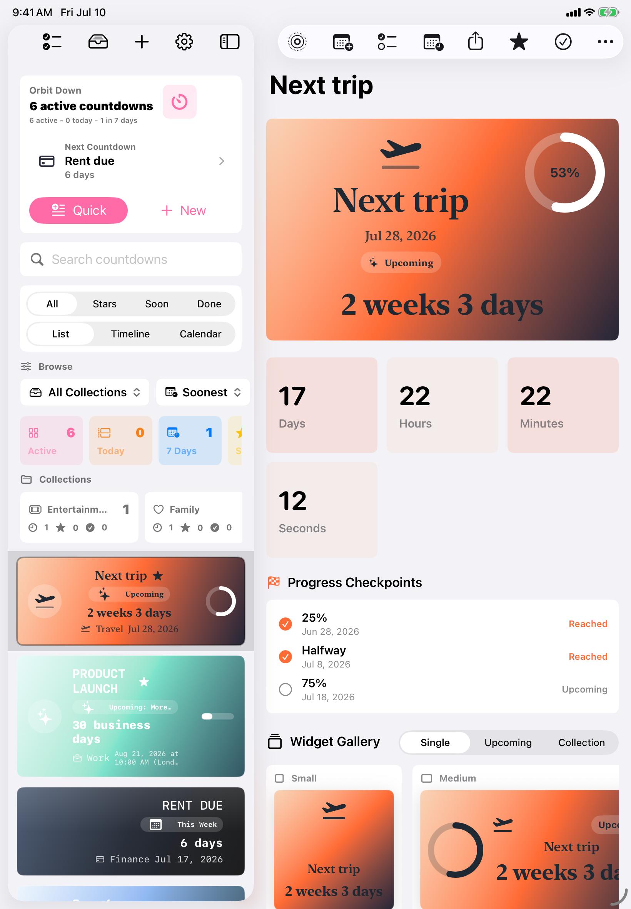

Natural-language creation
Type phrases like "Dinner tomorrow at noon", "launch brief by EOD", "payday every other Friday", or paste a multi-line list and review each countdown before saving.
Free. Private. Ad-free.
A highly customizable countdown app for iPhone, iPad, and Mac, built for the moments you want visible without opening the app.
Countdowns That Fit Your Life
Orbit Down helps you create, organize, style, and share countdowns for trips, launches, birthdays, exams, bills, holidays, goals, and the everyday deadlines that deserve a clean place to live.
Type phrases like "Dinner tomorrow at noon", "launch brief by EOD", "payday every other Friday", or paste a multi-line list and review each countdown before saving.
Choose layouts, palettes, symbols, typography, progress styles, milestones, business-day units, reminders, repeat rules, and completion behavior.
Import Calendar events, dated Reminders, Contacts birthdays and anniversaries, and calendar invite files while keeping editable details.
Use the app without ads, subscriptions, tracking, analytics SDKs, or a developer-operated backend. Optional iCloud sync uses your Apple ID.
Widgets First
Single countdown, upcoming list, and collection dashboard widgets are designed for Home Screen, Lock Screen, StandBy, iPad, and Mac surfaces where supported.


Built For App Store Review
Orbit Down is designed around simple privacy rules: no ads, no account, no analytics SDK, no developer-operated backend, and no third-party tracking.